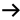

Interactive map of GNU/Linux OS and FOSS
Index
feedback
kernel map
more ...
Poster of Linux kernel
The best gift for a Linux geek
Running JavaScript
Navigation

Mouse:
wheel - zoom
drag - pan
items - links
Loading. Please wait ...
http://en.wikipedia.org/wiki/Portal:Free_software